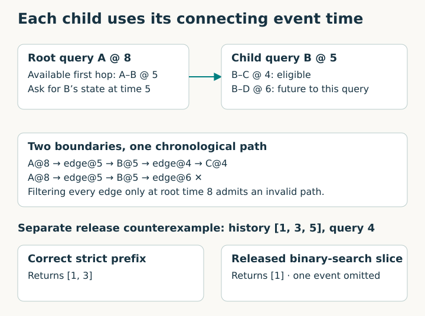
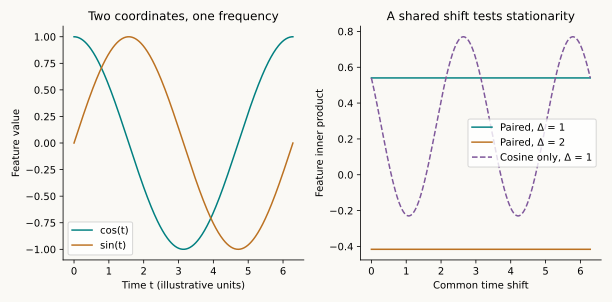
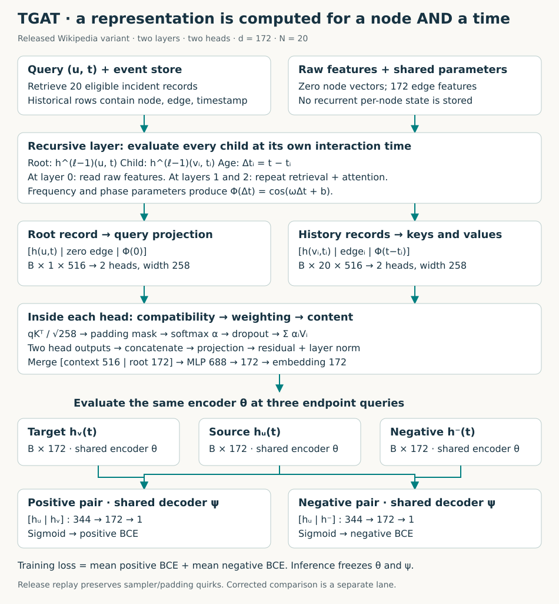
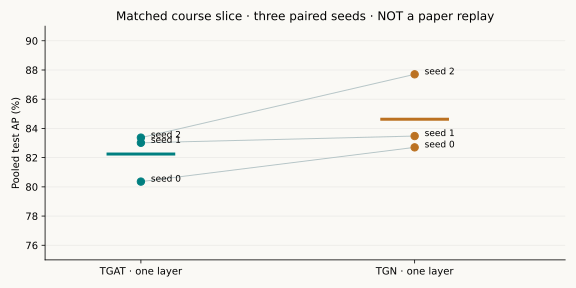

Year 3 · Quarter 3 · Lesson 103
TGAT: attention that knows when
0 · Retrieve before reading¶
Close lesson 102. Explain the difference between a node's memory, its embedding, and the shared model parameters. Which can change during evaluation? Then sketch a two-hop path whose first edge is legal at query time but whose second edge would leak future information.
Your tangible win: implement a continuous-time attention layer and trace exactly which events can influence its prediction. The lab then connects that implementation to a complete released Wikipedia experiment.
Read the core lesson in one sitting; do the lab and reproduction audit separately. Running the teacher's solution does not demonstrate mastery. Your status remains PENDING_WRITTEN_DEFENSE until you submit the written defense.
1 · From TGN's stored memory to TGAT's retrieved history¶
In lesson 102, TGN compressed observed interactions into a persistent vector for each node. A message updated that vector through a recurrent unit. The vector carried history into later predictions.
TGAT takes another route. For a request “represent user A at time 8,” it retrieves earlier interactions and computes an embedding from them. An embedding is a vector used to score a candidate pair or classify a node. TGAT does not maintain a learned recurrent state for every node between requests. It still needs the timestamped event store; “memoryless” does not mean “no history” or “no storage.”
In plain terms. TGN keeps a running summary. TGAT revisits selected records whenever it needs an answer. Both must establish what was available before the prediction.
This distinction matters for relational learning. A customer query may need recent orders, repeated visits, and older but relevant purchases. A static neighborhood tells us who interacted; a temporal neighborhood also tells us when. Xu et al., §§1–3 develops a way to put elapsed time inside the attention computation.
The tradeoff is concrete. Persistent memory can summarize a long stream, but its state must be restored and updated correctly. Recursive retrieval avoids that recurrent state, but adds repeated neighborhood computation. Neither property alone establishes which model will predict better. With 20 neighbors and two layers, the neighbor branch can request 400 second-hop records per endpoint before accounting for repeated requests. Reusing an embedding by node ID alone is unsafe: the same node queried at different times may have different legal histories.
2 · First make the neighborhood causal¶
An event is a tuple (u, v, t, e): source node, destination node, timestamp, and event features. A temporal graph can contain many interactions between the same pair. These are separate records, not one edge with an updated label.
For a query (u, t), the intended neighborhood contains events incident to u with event time tᵢ < t. Equal timestamps are excluded by this convention. This dataset protocol assumes the event is available at its timestamp; as lesson 101 showed, a real system must also check arrival or availability time. If your application knows an order within equal timestamps, that requires an explicit alternative protocol.
Worked example. A interacted with B at time 1, C at time 3, and D at time 5. At query time 4, the correct history is B@1 and C@3. D@5 is unavailable. A sorted-array lower-bound search gives the first index whose time is at least 4; every earlier index is eligible.

A second layer changes the cutoff. Suppose A's query at 8 retrieves B through their interaction at 5. B's representation must be evaluated at 5, not at 8. An event B–C at 6 is already in the past of the root query, but still in the future of B's historical representation. This is why an outer time filter is insufficient. See §3.2 and §3.4.
Predict before checking: is B–C@4 legal? Is B–C@5 legal? Explain the boundary before opening the answer.
Check the recursive path
Time 4 is legal; time 5 is excluded by the strict boundary. Each recursive request carries its own cutoff. The path's timestamps decrease as you move backward through the retrieved history.
Scope check. The released neighbor search has an off-by-one prefix bug: on history [1, 3, 5] at cutoff 4 it returns only [1]. Our published-experiment replay preserves this behavior to audit the release. The corrected comparison and your strict-boundary task return [1, 3]. These are separate experiments, not interchangeable fixes.
3 · Represent elapsed time with learnable waves¶
A timestamp is a number; attention expects feature vectors. Simply appending a huge timestamp can make its numerical scale dominate other features. What often matters is the elapsed time, Δt = query time − event time. For real-event inputs, using elapsed time also makes a joint shift of query and event timestamps leave that input unchanged.
3.1 · Why sine and cosine appear¶
A kernel is a function measuring similarity between two inputs. A stationary, or translation-invariant, temporal kernel depends on their difference, not the origin of the clock. A positive semidefinite kernel has a Gram matrix K for which aᵀKa ≥ 0 for every vector a. This makes it compatible with representing similarity as an inner product.
Bochner's theorem connects continuous stationary positive semidefinite kernels to nonnegative spectral measures. For a normalized real temporal kernel, the paper expresses similarity as an average of cos(ω(t₁−t₂)). Here ω is an angular frequency: it controls how quickly a wave varies with time. A normalized measure can be viewed as a frequency distribution. Paper §3.1, Eqs. 3–5.
The useful identity is:
cos(a−b) = cos(a)cos(b) + sin(a)sin(b).
For m frequencies, define φ(t) = [cos(ω₁t), sin(ω₁t), …, cos(ωₘt), sin(ωₘt)] / √m. This vector has 2m coordinates. Its inner product at t₁ and t₂ is the average of cos(ωⱼ(t₁−t₂)). Paired sine and cosine cancel the dependence on the common clock origin. The paper's dimension notation is loose; count the coordinates explicitly in code.
Worked example. With one frequency ω=1, φ(0)=[1,0] and φ(π/2)=[0,1]. Their inner product is zero. Shift both times by π/2: the vectors become [0,1] and [−1,0], whose inner product is still zero.

The theorem motivates the representation. It does not say that every trained attention layer is a stationary kernel, or that finite learned frequencies prove the paper's Monte Carlo approximation guarantee. The guarantee assumes frequencies sampled from a specified spectral distribution. The network instead optimizes frequency parameters jointly with its task loss.
3.2 · What the released code actually trains¶
The released TimeEncode uses cos(ωⱼ Δt + bⱼ), with learned frequencies and phases. Its 172 initial frequencies range geometrically from 1 to 10⁻⁹; initial phases are zero. It does not explicitly stack the paired sine/cosine vector or divide by √m. See the released encoder.
A cosine-only inner product need not be stationary in its two arguments: cos(a)cos(b) includes a term depending on a+b. Do not transfer the paired-feature identity to this finite released representation. For real events, a joint shift of query and event timestamps leaves elapsed times unchanged. That establishes a property of the relative-time inputs, not automatically of the complete released model. Its fixed time-zero padding can break full-model invariance when an empty history receives uniform attention; section 4 demonstrates this distinction.
Time units matter. Changing seconds to days changes the inputs by a factor of 86400. Equivalent waves require corresponding inverse rescaling of frequencies. The replay keeps the released timestamp units without normalization.
4 · Model architecture: time becomes part of the attention decision¶

The diagram shows the released two-layer Wikipedia variant. B is batch size, N=20 is sampled neighbors per request, and d=172 is node, edge, and time width. Each layer has two heads. A head is a separately learned query/key/value projection and weighted aggregation.
Step 1 · Recursively construct the input records¶
The base representation h⁰ᵤ(t) is the node's raw feature vector. Wikipedia's released node vectors are zero; interaction edge features carry information. At layer ℓ, compute the root's h^(ℓ−1)ᵤ(t), retrieve incident records, and compute each neighbor h^(ℓ−1)ᵢ(tᵢ). The same lower-layer parameters are shared across those requests. This is the inductive contract: an unseen node can be processed using the same learned function when its features and legal history are supplied. It is not a guarantee of accurate cold-start predictions; zero-feature nodes with no history carry little distinguishing information. Paper §3.2.
Follow the implementation. The recursive method below is the code used by the experiment. Notice which timestamp becomes the child cutoff, and where the student-written encoder and attention functions enter through the layer modules.
def tem_conv(self,nodes,cutoffs,layer,num_neighbors=20):
device=self.n_feat_th.device
raw=self.node_raw_embed(torch.as_tensor(nodes,dtype=torch.long,device=device))
if layer==0:return raw
source=self.tem_conv(nodes,cutoffs,layer-1,num_neighbors)
nbr,eid,when=self.ngh_finder.get_temporal_neighbor(nodes,cutoffs,num_neighbors)
child=self.tem_conv(nbr.ravel(),when.ravel(),layer-1,num_neighbors).reshape(len(nodes),num_neighbors,-1)
elapsed=torch.as_tensor(cutoffs[:,None]-when,dtype=torch.float32,device=device)
time_features=self.time_encoder(elapsed)
zero_time=self.time_encoder(torch.zeros((len(nodes),1),device=device))
edge=self.edge_raw_embed(torch.as_tensor(eid,dtype=torch.long,device=device))
padding=torch.as_tensor(nbr==0,device=device)
return self.attn_model_list[layer-1](source,zero_time,child,time_features,edge,padding)
Step 2 · Assemble a query and candidate records¶
The root record is [root embedding, zero edge vector, Φ(0)], shape B×1×516. A neighbor record is [neighbor embedding at tᵢ, edge features, Φ(t−tᵢ)], shape B×20×516. Concatenation preserves all three sources of information. The current candidate interaction's features are not inserted into its own query history.
The projections produce q, K and V. For each head their final dimension is 516/2 = 258. The query describes what the root seeks; the keys determine compatibility; the values carry the information that will be combined. Time can affect both compatibility and content because it enters both K and V.
Step 3 · Normalize compatibility over available records¶
For neighbor i, compute scoreᵢ = q·kᵢ/√258. The divisor keeps dot-product scale from growing with head width. Softmax converts scores to nonnegative attention weights that sum to one before dropout. Padding positions are masked. Attention dropout during training means the realized post-dropout weights need not sum to one.
Then context = Σᵢ αᵢvᵢ. The two head outputs are concatenated and projected. The release adds the root query as a residual connection and applies layer normalization. A feed-forward merge concatenates the 516-dimensional context with the root's 172-dimensional previous-layer representation. Its widths are 688 → 172 → 172, yielding the next node embedding.
Scope check. The finite −10¹⁰ release mask gives an all-padding row uniform weights. Values can contain nonzero time encodings even when raw node and edge vectors are zero. Thus “no neighbors” is not generally equivalent to “zero context.” Our source parity tests include padding; the lesson does not silently substitute another convention.
Source-confirmed counterexample. In a synthetic, untrained two-layer model with no history, shift a query from time 2 to time 12. Padded event times remain zero, so the artificial ages change from 2 to 12. Keeping every weight fixed gives:
| Attention convention | Probability at t=2 | Probability at t=12 |
|---|---|---|
| Released finite mask | 0.597007 | 0.595062 |
| Zero all-padding weights, same parameters | 0.597401 | 0.597401 |
These are diagnostic probabilities, not Wikipedia AP or trained evidence. The original model and the port agree exactly on the released case. The zero-safe intervention isolates the padding mechanism; it is not applied to the published-experiment replay. Executable counterexample · Measured diagnostic.
Step 4 · Predict a pair using shared embeddings¶
Compute hᵤ(t) and hᵥ(t) with the same TGAT encoder. Concatenate them and pass them through the shared pair MLP: 344 → 172 → 1. A sigmoid maps the logit to a probability. During training, also encode a sampled negative destination and use the same decoder. The loss is mean positive binary cross-entropy plus mean negative binary cross-entropy.
A negative destination is a contrastive example, not proof that the pair can never interact. Release sampling allows collisions with positive pairs. These choices affect the task and the interpretation of AP. The released evaluation uses the full dataset's endpoint universe as a candidate pool. That is a benchmark convention, not evidence that every candidate identity was already known at a historical query time.
At inference, shared weights are frozen. Sampled history still affects the prediction. The release uses uniform sampling with replacement, so repeated requests can differ unless you also control the sampling RNG. Memoryless does not mean deterministic.
5 · A numerical attention trace you can change¶
Worked example. Use one scalar head, query q=1, two historical records at times 1 and 3, and values 2 and 8. Let keys equal cos(Δt). At query time 4, elapsed times are 3 and 1, so logits are approximately −0.9900 and 0.5403. Softmax gives weights about 0.178 and 0.822. Their weighted value is about 6.932.
This is a mechanism illustration, not a fitted TGAT prediction. The real model projects node, edge and time features together.
Change only the query time. Frequencies, event times, projection and values stay fixed. The baseline at time 4 remains visible. The weight can move back toward the older event because cosine is periodic. Learned time features permit recency or periodic patterns; they do not enforce monotonic decay.
Connect backward. Lesson 084 introduced learned neighbor weighting. Lesson 093 introduced type-conditioned transformations. Here, elapsed time changes the records being compared, while historical cutoffs change which records are eligible at all. Those are two different temporal mechanisms.
6 · What exactly are we trying to reproduce?¶
The named targets are TGAT's Wikipedia AP cells in Tables 1 and 2: 95.34% transductive and 93.99% inductive. The paper reports ten-run standard deviations of 0.1 and 0.3 percentage point. The numerical tolerance for this course replay was fixed at 0.5 percentage point before training.
Average precision (AP) summarizes how well positives rank ahead of negatives across recall levels. It depends on the candidate population and negative sampling. The released metric is an equal average of batch AP values, with evaluation batches of 30 positives and 30 negatives. This differs from calculating AP once over all predictions.
The release labels its first population “old nodes,” but actually evaluates all future test events, including new-node events. Its new-node subset requires at least one endpoint absent from training. The literal paper descriptions differ. Even a numerically close replay therefore cannot establish historical protocol identity.
Execution status: RUNNING. Ten full Wikipedia release-protocol runs have been launched. No completed mean or numerical verdict is claimed yet. Historical identity remains INCOMPARABLE; full-paper parity NOT_ESTABLISHED.
Before trusting a result, trace these choices. We pin the raw data hash, publication-era source, preprocessing, held-node split, dimensions, initialization, sampler, BCE objective, Adam settings, checkpoint rule, seeds and metric aggregation. We preserve the released neighbor and batch omissions and the shifted checkpoint index. The undefined args.new_node reference is omitted because it is inert and otherwise prevents the original entrypoint from starting. Read the complete protocol and deviation ledger, source manifest, and data audit.
Scope check. Source output/gradient equality is evidence about implementation. A ten-run mean is evidence about this executed protocol. Neither establishes every experiment in the paper, original runtime identity, or superiority on other datasets. Reddit, private industrial data, downstream node classification and the full baseline/ablation suite are not reproduced here.
7 · Compare TGAT and TGN under one declared protocol¶
A direct subtraction from lesson 102's author scores would mix model and experiment differences. Instead, this lesson runs six fresh fits: TGAT and TGN at three seeds each.
Held fixed: 2000 training, 400 validation and 400 test interactions; the same retained event graph; the same per-seed destination negatives; one layer; latest ten strict-past neighbors; batch 200; Adam 10⁻⁴; dropout 0.1; three epochs. Each arm selects its own best validation pooled AP. Test AP is computed on the full retained prediction vector, not averaged over batches.
Varied: TGAT recomputes temporal embeddings; TGN maintains persistent node memory. Their attention widths, parameter counts and empty-neighborhood handling also differ. This experiment compares two implementations under a shared protocol; it does not isolate the causal effect of memory alone. TGN's selected checkpoint restores memory, clocks and pending messages together.
Before revealing the table, predict whether three short runs can establish general architectural superiority. Name a factor that might reverse the ordering at full training scale.
| Seed | TGAT test AP | TGN test AP | TGN − TGAT |
|---|---|---|---|
| 0 | 80.359% | 82.704% | +2.345 pp |
| 1 | 83.015% | 83.477% | +0.462 pp |
| 2 | 83.369% | 87.704% | +4.335 pp |
TGAT: 82.248% ± 1.645 pp sample SD; TGN: 84.628% ± 2.692 pp sample SD. These are author-reference measurements, separate from your fresh notebook run. MEASURED course experiment; paper comparison INCOMPARABLE. Complete traces.

The seed standard deviation describes variation on this one fixed event slice. Seeds are not independent datasets. We do not perform a cross-dataset rank test or claim a benchmark winner from this comparison.
8 · Lab: your code must control the trained model¶
Open the student notebook, prepared notebook view, or executed teacher solution. The notebook includes this explanation, portable figures, and the complete readable TGAT and TGN implementations used in its comparison.
- TODO — functional encoding: implement broadcasting of elapsed times against learned frequency and phase vectors. CHECK verifies values, shape, and gradients.
- TODO — temporal attention: implement scaled query/key compatibility and the declared padding behavior. CHECK includes an all-padding counterexample.
- TODO — strict history: implement the lower-bound cutoff used in the corrected comparison. CHECK covers empty histories, tied timestamps and boundaries.
The subsequent training loop calls these functions. They are not disconnected exercises. The default notebook executes a small fresh matched comparison; its numbers are your kernel's results. Author evidence is labeled separately. A post-EXIT switch runs the complete release replay with the same visible TGAT implementation. The smoke, closer and paper presets denote different execution budgets, not different strengths of reproduction claims.
9 · Written defense and the next lesson¶
Submit your three functions and training output with these five answers:
- Trace a two-layer request with root time 8, first interaction time 5 and child interaction time 6. Explain exactly where the last interaction is rejected.
- Derive the paired sine/cosine inner-product identity. Explain why it does not establish the same property for arbitrary learned cosine-only features.
- Explain how changing elapsed time changes both attention weights and weighted content, and why the result need not be monotone in age.
- Contrast TGAT's event history and sampling RNG with TGN's memory, clocks and pending messages. What must a reproducible checkpoint preserve?
- State the strongest claim supported by the selected replay and the common-protocol comparison. Identify one source defect and one historical detail still not established.
Ask the tutor about any unclear step, or paste your written defense for strict feedback. Return tomorrow and redraw the recursive cutoff path from memory. In a week, explain the encoder-to-score path without reading the diagram.
Forward connection: lesson 104 audits temporal leakage. This lesson gives it two concrete failure modes: a child representation queried at the root's later time, and a current interaction inserted before its own prediction. Later, time tokens in relational models will reuse the representation idea; they will still need a valid information boundary.
Primary reading: Xu et al., Inductive Representation Learning on Temporal Graphs, §§3–4 and Appendix A.5. Read §3.1 for the functional encoding and §3.2 for recursive attention, then audit the released implementation. Keep the TGAT reference card for review.